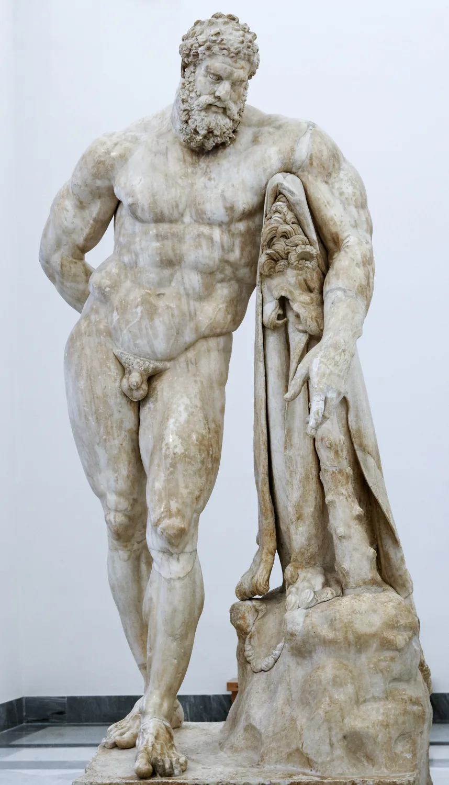
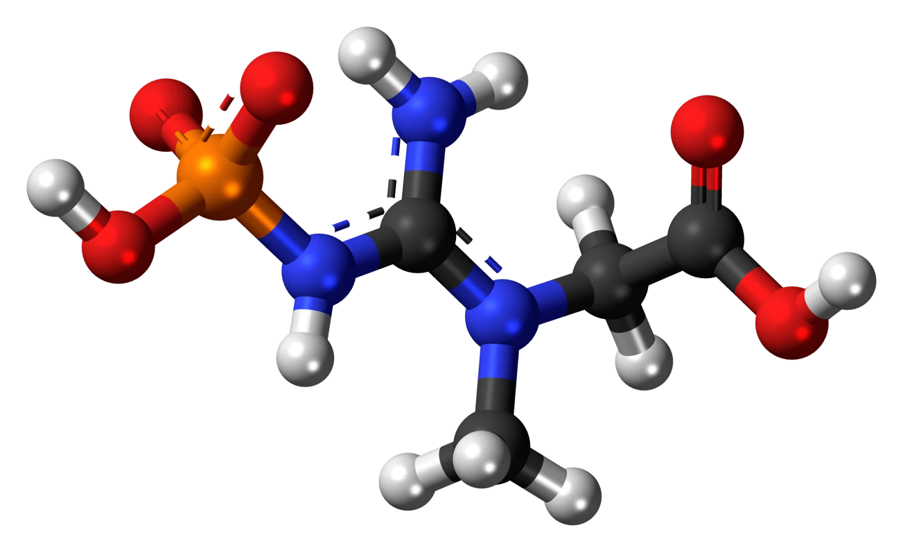
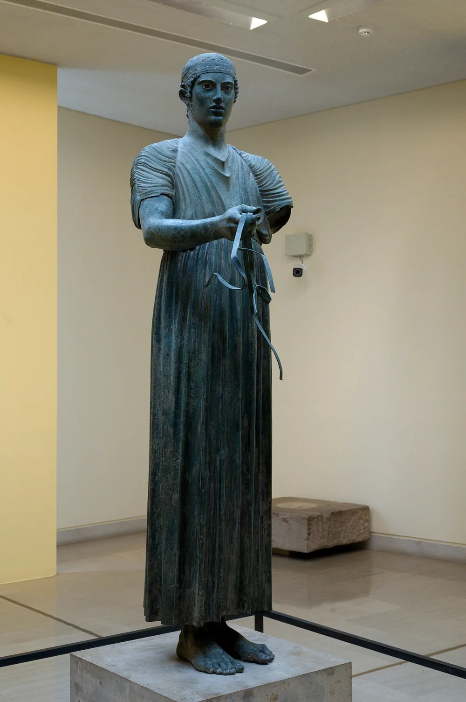

The one-page version
The useful part of muscle science fits on one page. Train each muscle with enough hard weekly sets, add repetitions or load when you can, eat enough protein, sleep, and keep going. Creatine helps a little. Most products do not. The difficult part is not finding another lever. It is noticing when a lever that works has started paying less.
You can become strong and visibly muscular on a plan that fits on a sticky note. You can also keep adding work after the easy progress is gone. Research can show that the returns shrink, especially as weekly volume rises. It cannot tell you that you are exactly 90 percent of a personal genetic ceiling, or that another pound will take a certain number of months. Big enough is therefore not a biological coordinate. It is the point where the next increment is no longer worth what it asks from the rest of your life.
These are the high-return inputs. The exact result and the time it takes vary too much to promise a percentage.
That is the engine. The chapters below show where the measurements are solid and where judgment has to replace precision.
The supplement aisle, in one glance
A supermarket of powders exists to convince you that muscle is a purchasing problem. It mostly is not. Here is the short sort: one thing worth taking, one thing that is optional and oversold, and a long shelf of things you can walk past.
- Creatine monohydrate. One of the most studied and reliably useful sports supplements. It modestly improves resistance-training outcomes; possible cognitive benefits are less settled. Use plain monohydrate, 3 to 5 grams a day. Kreider 2017 strong
- Protein powder (only if food falls short). It is convenient protein, not a separate muscle-building category. Supplementation helps most when it raises a low daily intake toward an adequate one; the estimated breakpoint varies across people and studies. Morton 2018 strong
- Vitamin D. Correct a diagnosed deficiency with a clinician. Current guidance does not support one universal blood target, and intentional ultraviolet exposure is not a safe vitamin strategy. Use food, fortified food, or a supplement when appropriate. Endocrine Society 2024 AAD strong
- Caffeine. A genuine acute performance aid, but not a direct hypertrophy supplement. It is useful if it improves a session and costly if it disturbs sleep. Guest 2021 good
- Almost everything else. Testosterone "boosters," BCAAs on top of enough protein, fat burners, pre-workout pixie dust, exotic creatine blends that cost more than the monohydrate they are diluting. The evidence is thin to nonexistent, and your money is better spent on food. Antonio 2021 good
Diminishing returns, without the fake precision
The first useful dose of lifting changes a body more than the last heroic dose. That part is well supported. The popular claim that a lifter reaches exactly 80 or 90 percent of a genetic ceiling after a fixed number of years is not. No study can measure your personal ceiling in advance, and most training trials last weeks or months, not the decade needed to watch an individual approach one.
The best current synthesis pooled 137 systematic reviews and more than 30,000 participants. Resistance training worked across a wide range of loads, schedules, and programs. Hypertrophy was enhanced by higher volume, summarized as at least 10 weekly sets, while many other prescription details did not consistently change outcomes. The review does not supply one exact optimum for everyone. ACSM 2026 strong
A separate 2026 dose-response meta-regression added an important qualification: the observed curve kept rising as weekly sets increased, but each added set bought less than the one before it. Its models fit the available studies rather than defining a hard threshold, so confidence in the exact curve should fall toward the high-volume edge. Pelland 2026 strong
The direction is clear. The personal coordinates are not.
| The evidence supports | The evidence does not supply |
|---|---|
| More hard weekly sets usually build more muscle | your exact percentage of genetic potential |
| the marginal gain per added set gets smaller | a universal natural ceiling in pounds or FFMI |
| training closer to failure is generally more stimulative | one perfect reps-in-reserve target for every exercise |
| people vary greatly in observed response | a reliable year-by-year gain schedule for one person |
Locate your weekly dose
This tool does not predict muscle. It places one muscle group's weekly volume inside the ranges current reviews can defend. Count a direct set as one. Count a compound lift for an assisting muscle fractionally, about half a set, rather than awarding every involved muscle a full set.
Weekly volume, one muscle group
drag meThe bands are practical reading aids, not biological borders. Exercise selection, training age, set quality, recovery, and the muscle being trained all move them. ACSM 2026 Pelland 2026
The useful dose, with uncertainty left in
| Lever | A defensible target | What more usually buys |
|---|---|---|
| Volume | start near 10 fractional sets per muscle each week | more growth, with smaller returns and more fatigue |
| Effort | most sets roughly 2 to 3 reps from failure | possibly more stimulus, certainly more fatigue |
| Frequency | whatever schedule distributes good sets | little independent effect when volume is matched |
| Protein | about 0.7 g per pound per day | less expected benefit once intake is adequate |
| Sleep | a regular 7 to 9 hour opportunity | no established hypertrophy percentage by hour |
| Calories | maintenance or a modest surplus, based on the goal | larger surpluses mostly increase fat gain |
| Time | months to see the trend, years to explore it | no valid countdown to a personal ceiling |
Training nearer failure appears to improve hypertrophy on average, but the exact relationship is uncertain and depends on how failure is measured. Failure is not required on every set. Frequency is mainly a way to distribute recoverable volume, not a separate growth switch. Robinson 2024 ACSM 2026
Protein has the clearest practical target, but even that is a population estimate rather than a clean ceiling. A large meta-analysis estimated a breakpoint near 0.74 grams per pound per day, with a wide confidence interval. It supports 0.7 as a sensible target, not a promise that the next gram does literally nothing. Morton 2018 strong
What “big enough” can honestly mean
People do not gain at one published annual rate. Studies show large variation, measurement noise, and no clean split where women gain half as much as men. A 2025 meta-analysis found similar relative hypertrophy between sexes, with only a small male advantage in absolute change. Refalo 2025 strong
The stopping rule has to be personal: keep adding work while the return still matters to you and recovery remains good. Stop adding it when another weekly hour, another food rule, or another tired joint matters more than the likely increment of muscle. A competitive bodybuilder may choose differently from a parent who wants strength, health, and three free evenings. Neither choice can be read from a genetic-potential slider.
Diminishing returns can tell you how to spend the next hour. They cannot tell you what percentage of your genes you own.The limit of the evidence
Creatine, kept in proportion
Creatine monohydrate can add a little strength and lean mass to a resistance-training program. It is inexpensive, extensively studied, and generally well tolerated by healthy adults. The effect is useful rather than transformative, which is exactly the scale a guide about diminishing returns should preserve.
Creatine is not exotic. It is a small molecule your liver already makes and your muscles already store, and you eat about a gram of it a day if you eat meat or fish. Supplementing simply tops the tank up past what food can manage, and a fuller tank does measurable work.
What it actually does, up close
Your muscles run their hardest, fastest efforts on a tiny, instant battery called the phosphocreatine system. When a muscle fires, it spends ATP (the cell's energy coin) and is left holding spent change, ADP. Phosphocreatine immediately hands over a phosphate to turn that ADP back into fresh ATP, in a fraction of a second, faster than any other energy pathway in the body. The more phosphocreatine you have banked, the longer you can keep that instant battery topped up. Supplementing raises the muscle's creatine and phosphocreatine stores by 20 to 40 percent. Kreider 2017 strong
This is phosphocreatine itself: a creatine molecule carrying a charged phosphate group, the orange cluster at left. It hands that phosphate straight to spent ADP to rebuild ATP, the cell's energy coin, faster than any other system in the body. A fuller bank of it means a couple more good reps before the battery runs flat.

This is also why creatine helps short, powerful efforts (a heavy set, a sprint, a jump) and does almost nothing for a long, steady jog. It is a battery for bursts. 3-D model by Jynto, Wikimedia Commons (CC0)
{kind=link}
The muscle effect: real, but be honest about the size
Here is where the marketing and the science part ways. Most of creatine's muscle-building power is indirect: by topping up that battery it lets you grind out an extra rep or two and recover a little faster, so you pile up more good training over months. Kreider 2017 Its direct contribution to muscle thickness, isolated from the training, is small, on the order of a fraction of an inch. Burke 2023 strong The training builds the muscle. Creatine just lets you train a bit harder and hold a bit more.
The bars are the extra gain from creatine versus an identical program with a placebo, pooled across meta-analyses. Useful, not transformative.
| Bench +3.2 lb, squat +12.4 lb vs placebo | Kazeminasab 2025 |
| Older adults +3 lb lean mass | Chilibeck 2017 |
A possible brain effect, kept in proportion
Creatine also participates in brain energy metabolism. Reviews report possible benefits for memory, particularly under stress or in groups with lower baseline creatine intake, but the evidence is smaller and less consistent than the sports literature. A striking 2024 sleep-deprivation experiment used a single dose near 25 grams in a small sample; it does not show that the ordinary daily spoonful sharpens a rested brain. Gordji-Nejad 2024 Avgerinos 2018 mixed
How to take it
Buy plain creatine monohydrate, the original cheap form. Nothing fancier has been shown to beat it; the fancy versions cost more to do the same job. Kreider 2017
- 3 to 5 grams a day, every day. Use the included measured scoop or a scale; ordinary teaspoons vary. This dose saturates muscle over roughly three to four weeks.
- Loading is optional. 20 grams a day for five to seven days fills the tank faster, but reaches the same place. Most people skip it.
- Timing does not matter. Any time, with or without food. Consistency is the only thing that counts.
- A small scale increase is possible. Creatine can draw more water into muscle, especially during loading. The amount and timing vary, and no weight change does not prove it failed.
The myths, retired
How muscle actually grows
Resistance training asks muscle to produce high tension. Repeated exposure, enough recovery, and adequate nutrition can shift the tissue toward growth. The molecular story is complicated; the practical stimulus is not.
The signal: tension, not damage
For years people thought you had to "tear the muscle down," and that soreness proved a good workout. That is mostly wrong. The primary signal for growth is mechanical tension: the muscle sensing a heavy load through a full range of motion and converting that strain into "build" signals. Wackerhage 2019 good Damage and the metabolic "burn" are supporting players at most, and chasing soreness just buys fatigue. Bernardez-Vazquez 2022
You deliver that tension with a handful of levers, about six of them. Every one has a sweet spot, and pushing past it costs more than it pays.
Lever one: volume (the big one)
Volume, the number of challenging sets a muscle performs each week, is the lever most tightly tied to growth. Count direct work as one set. Count a compound lift for an assisting muscle fractionally, commonly about half a set: a bench press is direct chest work and indirect triceps work; a row is direct back work and indirect biceps work. That fractional method best fit the newest dose-response analysis. Pelland 2026 strong Older pooled trials also found that groups performing 10 or more weekly sets generally grew more than lower-volume groups. Schoenfeld 2017
But the returns shrink. The newest analysis found no observed point where added volume became literally useless, only a gentler slope as sets accumulated. Pelland 2026 strong At some individual dose, the added time and fatigue may stop being worth the small expected gain. The study cannot choose that dose for you.
Growth climbs fast through the first ten or so weekly sets, then keeps rising more and more slowly. It does not truly flatten; you just pay more and more for less and less.
About 10 fractional sets per muscle group per week is a defensible start. Higher volumes can add growth, with smaller returns and less evidence at the far end.
Lever two: load (lighter than you think)
How heavy? For growth, surprisingly flexible: loads from about 30 to 85 percent of your one-rep max produced similar average hypertrophy when sets were taken close to failure. Schoenfeld 2017 strong In other words, a hard set of 8 and a hard set of 25 can both work. For pure strength, heavy wins clearly. So pick loads that let you train hard without wrecking your joints, and stop worrying that 12-rep sets are "too light to grow."
Lever three: effort (close to failure, not always to it)
Sets generally become more stimulative as they finish closer to failure, but the exact curve is uncertain. Failure itself is not required, and using it on every set adds fatigue that can reduce later work. A practical default is to finish most sets with roughly 2 to 3 reps in reserve, then use failure selectively when the exercise is safe and the extra fatigue is acceptable. Robinson 2024 ACSM 2026 strong
The smaller levers
- Frequency. Once weekly can grow muscle when it delivers enough good work. Two or more sessions are often easier for distributing volume, but frequency has little independent hypertrophy effect when weekly volume is accounted for. Pelland 2026 strong
- Rest between sets. Enough rest helps preserve performance. In one trial of trained men, 3 minutes produced more growth than 1 minute. That supports longer rests when the next set would otherwise suffer, not one perfect stopwatch setting. Schoenfeld 2016 good
- Tempo. A wide range of ordinary repetition durations can build muscle. Use a controlled motion that keeps the target muscle working; deliberately super-slow repetitions appear less effective. Schoenfeld 2015 good
- Progression. Over time, add repetitions, load, range of motion, or useful sets when performance allows. A static routine eventually stops being a new stimulus.
The part that happens out of the gym
Sleep and protein support recovery, but hypertrophy research does not provide a clean percentage for each hour slept. In one small laboratory study, a night of total sleep deprivation reduced muscle protein synthesis by about 18 percent. That is evidence against all-nighters, not proof that an ordinary short night costs the same amount of muscle. Lamon 2021 mixed A regular 7 to 9 hour sleep opportunity remains a sound recovery target.
And the famous "anabolic window," the panic that you must drink protein within thirty minutes of your last rep? A myth: once you account for total daily protein, the timing magic disappears. Schoenfeld 2013 strong The window is hours wide. Hit your daily total and the clock takes care of itself, as the food chapter covers.
A practical training template
A program is a delivery system for challenging sets and gradual progression. The research leaves plenty of room for different exercises, schedules, and rep ranges, so this is a starting template rather than the exact answer. Pick the version that fits your week, run it long enough to see a trend, and adjust one variable at a time.

The rules every good program obeys
Pick the split that fits your life
The "split" is just how you divide the body across the week. More training days do not carry a special hypertrophy bonus. Choose the schedule that lets you complete good work and recover.
Each colored cell is a training day. The schedules spread similar work across 3, 4, or 6 sessions.
More days is not more growth, it is just more room to fit your sets in with good quality. Three honest full-body days beat six half-hearted ones.
Where to start
If you are new, run this three-day full-body plan: you practice the big lifts often and miss nothing if life eats a day. Rotate variations and add a rep or a little weight most weeks. When three days no longer fit your volume, move up to the upper/lower layout or the full push/pull/legs program written out below. Schoenfeld 2020
| Each full-body session, 3x a week | Sets × reps |
|---|---|
| Squat or leg press | 3 × 6-10 |
| Bench or machine chest press | 3 × 6-10 |
| Row (barbell or cable) | 3 × 8-12 |
| Overhead press | 2 × 8-12 |
| Romanian deadlift or leg curl | 2 × 8-12 |
| Lat pulldown or pull-up | 2 × 8-12 |
| Biceps curl + triceps extension | 2 × 10-15 |
At 17 to 19 working sets, this session will often take close to an hour once warm-ups and rest are included. That is one useful dose, not the minimum that can build muscle. Short sessions using fewer sets, supersets, or one hard set per exercise can still produce hypertrophy, although they may leave some possible growth on the table. Iversen 2021 Hermann 2025 good
The same work across six shorter days
Six days does not have to mean a bigger dose. Push / pull / legs can divide similar weekly work into shorter sessions. When you total it, count presses as direct chest work and fractional triceps work, and rows as direct back work and fractional biceps work. That keeps the program from quietly awarding full credit twice for one set.
| Push, Monday and Thursday | Sets × reps |
|---|---|
| Bench press second pass: incline dumbbell press | 3 × 5-8 |
| Seated dumbbell shoulder press second pass: machine shoulder press | 3 × 8-12 |
| Cable fly second pass: pec-deck | 2 × 12-15 |
| Lateral raise, both days | 3 × 12-20 |
| Triceps pressdown second pass: overhead extension | 2 × 10-15 |
| Pull, Tuesday and Friday | Sets × reps |
|---|---|
| Deadlift second pass: barbell row | 3 × 3-6 |
| Pull-up or lat pulldown, both days | 3 × 6-10 |
| Chest-supported row second pass: single-arm dumbbell row | 2 × 8-12 |
| Face pull or rear-delt fly, both days | 3 × 12-20 |
| Barbell curl second pass: hammer curl | 3 × 8-12 |
| Legs, Wednesday and Saturday | Sets × reps |
|---|---|
| Back squat second pass: hack squat or leg press | 3 × 5-8 |
| Romanian deadlift second pass: hip thrust | 3 × 6-10 |
| Walking lunge or leg press, both days | 2 × 10-15 |
| Seated leg curl second pass: leg extension | 2 × 10-15 |
| Standing calf raise second pass: seated calf raise | 3 × 8-15 |
| Hanging knee raise or ab wheel, both days | 3 × 10-15 |
Progress it the same way as the starter plan. Add a repetition or a small plate when performance allows. If a slot stalls for a month, first check recovery and technique, then consider changing the exercise. More volume is an option, not an automatic upgrade: add it to a specific muscle only when you can recover from it and value the likely smaller return.
For the six-day template as written, each session contains 13 to 16 working sets. With warm-ups and ordinary rest, expect roughly 45 to 60 minutes. That estimate belongs to this template, not to hypertrophy in general. A shorter version can remove later isolation sets or use compatible supersets; the trade is lower weekly volume, not automatic failure to grow.
| The week, in hours | Days | One session | Per week | What it buys |
|---|---|---|---|---|
| Full body | 3 | ~60 min | ~3 hrs | a compact default with room to adjust |
| Upper / lower | 4 | ~55 min | ~3.5 hrs | the same dose in four easier days |
| Push / pull / legs | 6 | 45-60 min | ~5 hrs | the same dose, plus direct arm, delt, and calf work |
Times assume honest rest and a 10-minute warm-up. All three carry the sane dose from the diminishing-returns chapter; the six-day costs more hours mostly because the small muscles get sets of their own.
Form, in one rule and six cues
Good form keeps the target muscle working through a useful range while the load remains repeatable and tolerable. If added weight shortens the range or changes the exercise into a different movement, reduce it. The cues below are practical defaults, not universal anatomy rules:
- Squat: sit down and back until your hip crease drops below your knee, bar stacked over mid-foot, knees tracking over your toes. Depth beats plates.
- Deadlift and Romanian deadlift: push the hips back, not down, keeping the bar dragging close and the back flat. It is a hinge, not a squat.
- Bench press: shoulder blades pinned back and down, a small natural arch, feet driving the floor, bar to the lower chest with elbows near 45 degrees. No bouncing.
- Overhead press: brace and squeeze the glutes so you do not lean back, press straight up, move your head "through the window" as the bar passes.
- Row: flat braced back, pull to the lower ribs by driving the elbows back, full stretch at the bottom. No heaving with the whole body.
- Pull-up and pulldown: start from a full hang, pull the elbows down and back until the chin clears, then lower all the way. No half reps, no kipping.
Keep the cardio
Cardio is not a tax a lifter pays for health. At ordinary doses it can coexist with hypertrophy, and cardiorespiratory fitness predicts outcomes that a larger arm cannot. The practical question is how to combine the two without turning every day into a maximal leg session.
Cardio and the heart
In a clinical cohort of more than 120,000 people, low measured cardiorespiratory fitness was strongly associated with higher mortality. The least-fit group had about five times the adjusted risk of the elite performers. This was observational evidence from people referred for treadmill testing, so it cannot prove that fitness alone caused the difference, but the association is large and consistent with the broader literature. Mandsager 2018 good
Adjusted mortality associations in one selected clinical cohort, compared with the study reference. These bars are not randomized causal effects.
In another large observational cohort, 15 minutes of moderate activity a day was associated with 14 percent lower mortality and about three years longer life expectancy. Wen 2011
Updated meta-analysis found no significant reduction in whole-muscle hypertrophy when aerobic and resistance training were combined. A small fiber-level effect remains possible, and very demanding endurance work can still compete with lifting for time and recovery. Lundberg 2022 Monserdà-Vilaró 2023 strong Two or three moderate sessions are a practical default. Separate hard cardio from hard lifting when convenient, and use low-impact modes if leg fatigue is limiting your strength work.
Food: enough, then ordinary
Training supplies the stimulus. Food supplies amino acids and energy. Protein has a useful target range, not a magic cutoff, and a calorie surplus is an option rather than a prerequisite for every lifter. Once those needs are covered, nutrition becomes much less exotic than its market suggests.
Protein: use a target, not a cliff
Pooling 49 studies and nearly 1,900 people, researchers estimated that the average added benefit of protein supplementation leveled near 0.74 grams per pound of bodyweight per day. The confidence interval was wide, roughly 0.47 to 1.0 grams per pound, and the estimate applies to groups, not a personal switch. About 0.7 grams per pound is therefore a sensible daily target for gaining, not proof that everything above it is wasted. Higher intakes can be useful during an energy deficit, especially for lean, trained people. Morton 2018 strong
The group estimate sits near 0.7 g/lb/day. Individual need and the confidence interval extend on both sides.
Spreading the total across 3 to 4 meals is practical, but daily intake matters more than perfect timing. Schoenfeld 2018
Your protein target
interactiveWhole food beats powder, and you cannot out-supplement a bad diet
Protein powder is convenient food. Its expected value is greatest when it moves a low daily intake toward adequacy; it is less likely to matter once the diet already supplies plenty. Morton 2018 Eggs, dairy, meat, fish, beans, lentils, tofu, and grains can reach the same target while bringing other nutrients. Powder is a tool for a busy day, not a requirement.
Eat a little more than you burn
A calorie surplus can support faster weight gain, especially for a lean novice, but muscle can also be gained near maintenance and during some deficits. If gaining is the goal, use the scale and waist rather than a universal calorie prescription: a modest surplus that moves bodyweight slowly is easier to steer than a fixed 500-calorie rule. Larger surpluses reliably add more fat and have not shown proportionally more hypertrophy. Helms 2023 good
Born different: genes and fibers
People can follow the same supervised program and show very different measured changes. Genetics is one contributor, but training history, nutrition, sleep, adherence, starting size, and measurement error travel with it. The honest lesson is not that a short trial reveals anyone's destiny. It is that a population average cannot promise your result.
In one large study, 585 people completed the same supervised 12-week arm program. Measured muscle-size change ranged from minus 2 percent to plus 59 percent, and strength change ranged from zero to plus 250 percent. The study demonstrates wide observed variation, not how much of that spread was genetic; small negative changes can also reflect measurement noise. Hubal 2005 good
Each dot represents part of the reported spread. The common program narrowed one variable; it did not isolate genes from every other cause.
A separate analysis found that larger responders began with and added more satellite cells. That offers one possible mechanism; it still does not turn a 12-week response into a lifetime ceiling. Petrella 2008
Fiber number is uncertain, too
Human muscle-fiber number varies substantially between people, but counting fibers in a living whole muscle is difficult. A 2026 systematic review found no significant increase after resistance training across the available studies, while stressing that the studies were short and the methods limited. A cross-sectional study of long-term trained people estimated more fibers than in untrained controls, but that design cannot show whether training created them or people with more fibers selected into training. The safest conclusion is that hypertrophy comes mainly from enlarging existing fibers; meaningful adult hyperplasia remains unproven. Barton 2026 Maeo 2024 mixed
Twin studies find substantial heritability for lean mass and strength. That does not mean 50 to 80 percent of your personal result was fixed at birth. Heritability describes variation in a studied population under its particular environment; it does not assign a genetic percentage to one body or reveal how close that body is to a ceiling. Arden 1997 good
Built slowly, more durable than it feels
Building muscle is slow, and complete immobilization can shrink it quickly. Ordinary layoffs are less dramatic, and retraining is often faster than the first build. Muscle appears to retain some cellular and epigenetic traces of earlier training, but their permanence and their exact contribution to faster regrowth are still being worked out.
With complete immobilization, a cast or a hospital bed, muscle can decline around half a percent per day early on, with strength falling faster than size. Marusic 2021 good Normal life is not bed rest. Short training breaks tend to cause much smaller changes, and the timing varies with training history, activity, illness, and the outcome measured. Mujika 2000
A conceptual timeline: a slow build, a layoff, and a faster return often seen in practice. The exact slopes vary, and the retained mechanism is not fully settled.
Animal work found long retention of acquired myonuclei. A small 2024 human study also found retained myonuclei after 16 weeks of detraining, but did not establish a clear physiological advantage during retraining. Epigenetic traces are another plausible part of the story. Bruusgaard 2010 Cumming 2024 Seaborne 2018 mixed
What this means for you
- A short layoff is usually manageable. One or two missed weeks are unlikely to erase months of progress, although skill and performance can feel rusty on the first sessions back.
- Coming back is often faster than starting. Retained skill, confidence, connective-tissue tolerance, training knowledge, and possible cellular memory can all contribute. Myonuclei are one candidate mechanism, not the whole proven explanation.
- Age changes the stakes. Population estimates suggest muscle mass declines around 1 to 2 percent a year later in life, with strength often falling faster. Individual trajectories vary, and resistance training is one of the most effective ways to preserve function. von Haehling 2010 good
Natural muscle and bodybuilding risk are different questions
The evidence does not show that approaching your natural muscular potential turns strength from healthy to harmful. The clearest dangers at the extreme come from a different exposure: anabolic drugs, severe contest dieting, dehydration, diuretics, and the physiology of professional bodybuilding. Combining those findings into one curve of “muscularity” would pretend that researchers measured a continuum they did not.
In ordinary populations, greater strength and muscle-strengthening activity are associated with lower mortality. Grip strength is also a marker of age, illness, body size, and general function, so those studies do not prove that adding muscle alone causes longer life. They do establish that frailty and the ability to produce force matter clinically. Leong 2015 Momma 2022 good
| Natural resistance training | Professional bodybuilding |
|---|---|
| studied through programs, strength, function, and activity | often includes anabolic drugs and polypharmacy |
| hypertrophy returns diminish as weekly volume rises | contest preparation can include extreme leanness and dehydration |
| no measured point where natural muscle reverses health | elite competitors show elevated cardiac mortality |
| the main extra cost is time, fatigue, and opportunity | the medical risk cannot be assigned to muscle mass alone |
What the extreme evidence does show
A 2025 cohort of more than 20,000 male bodybuilding competitors found much higher mortality among professionals than amateurs, particularly sudden cardiac death. The study also reported especially high risk in the largest open class. It is serious evidence about professional bodybuilding as practiced, not a randomized estimate of what each additional pound of muscle does. Vecchiato 2025 good
An autopsy review of bodybuilders who died young found enlarged hearts and thickened walls. Because the sample was selected after death and exposure histories were incomplete, it cannot separate the effects of body mass, anabolic drugs, blood pressure, stimulants, or other practices. It identifies a warning pattern, not a clean dose-response curve for muscularity. Escalante 2022 mixed
What this changes about “big enough”
The case for stopping short of maximum natural hypertrophy should rest on evidence we actually have: higher volumes produce smaller average returns, recovery becomes harder, and the pursuit can consume more time and attention. Health risk enters sharply when the method changes to drugs or extreme contest practices. It should not be smuggled backward onto a natural lifter deciding between 12 and 18 weekly sets.
The balance sheet
The useful targets in this guide are starting points with error bars. Some inputs level sharply, some continue paying at a lower rate, and some have never been mapped well enough to draw a dose-response curve. The table keeps those differences visible.
Use the middle column to begin. Use the right column to decide whether your own result justifies moving.
| Lever | A useful starting point | What the evidence says about more |
|---|---|---|
| Training volume | about 10 fractional sets per muscle each week | growth can keep rising, with smaller returns and more fatigue |
| Effort | most sets about 2 to 3 reps from failure | closer may add stimulus; failure is optional and more fatiguing |
| Protein | about 0.7 g per pound a day | average benefit likely shrinks; individual need is not a cliff |
| Calories | maintenance or a modest surplus | larger surpluses add disproportionately more fat |
| Cardio | a few moderate sessions a week | whole-muscle hypertrophy is usually preserved; manage recovery |
| Sleep | a regular 7 to 9 hour opportunity | there is no validated hypertrophy percentage for each hour |
| Progression | add load or reps when performance supports it | progression has several forms; forcing weight can degrade the set |
| Total size | no universal natural number | judge the next increment by time, fatigue, recovery, and purpose |
Only volume has a current quantitative hypertrophy dose-response across a broad range, and even that curve carries substantial uncertainty. The other rows should not be forced into matching percentages.
The evidence can tell you that another block of weekly sets will probably buy less than the first. It cannot price your evenings, your joints, your attention, or the satisfaction of competing. That final conversion is yours. The honest stopping point begins exactly where the literature ends.
Sources, and how to read them
Claims with important numeric or medical consequences are linked where they appear. The grades describe the kind and consistency of evidence, not whether a result is eternally settled.
The full list, 49 cited sources, grouped by topic
- Current synthesis and diminishing returns
- ACSM Position Stand (2026). Resistance-training prescription for muscle function, hypertrophy, and physical performance: overview of reviews. Medicine & Science in Sports & Exercise. PubMed
- Pelland JC, et al. (2026). Resistance-training volume and frequency dose-response meta-regression. Sports Medicine. PubMed
- Robinson ZP, et al. (2024). Proximity to failure and hypertrophy: meta-regression. Sports Medicine. PubMed
- Morton RW, et al. (2018). Protein supplementation and resistance training: meta-analysis. British Journal of Sports Medicine. PubMed
- Refalo MC, et al. (2025). Sex differences in resistance-training hypertrophy: systematic review and meta-analysis. PubMed
- Iversen VM, et al. (2021). Time-efficient strength and hypertrophy training: narrative review. Sports Medicine. PubMed
- Hermann T, et al. (2025). Single-set resistance training to failure or with repetitions in reserve. PubMed
- Creatine and supplements
- Kreider RB, et al. (2017). ISSN position stand on creatine safety and efficacy. JISSN. PMC5469049
- Burke R, et al. (2023). Creatine and regional muscle hypertrophy: meta-analysis. Nutrients. PMC10180745
- Kazeminasab F, et al. (2025). Creatine, strength, and power: meta-analysis. Nutrients. PMC12430374
- Chilibeck PD, et al. (2017). Creatine and lean mass in older adults. Open Access Journal of Sports Medicine. journal
- Gordji-Nejad A, et al. (2024). Single-dose creatine during sleep deprivation. Scientific Reports. nature.com
- Avgerinos KI, et al. (2018). Creatine and cognition: systematic review. Experimental Gerontology. PubMed
- Lak M, et al. (2025). Creatine, DHT, and hair outcomes: randomized trial. JISSN. PMC12020143
- Syrotuik DG, Bell GJ (2004). Variation in muscle creatine response. Journal of Strength and Conditioning Research. PubMed
- Antonio J, et al. (2021). Common questions and misconceptions about creatine. JISSN. PMC7871530
- Guest NS, et al. (2021). ISSN position stand on caffeine and exercise. JISSN. PMC7777221
- Endocrine Society (2024). Vitamin D for prevention of disease: clinical practice guideline. JCEM. PubMed
- American Academy of Dermatology. Vitamin D and ultraviolet exposure statement. AAD
- Training mechanics and recovery
- Wackerhage H, et al. (2019). Stimuli and sensors that initiate hypertrophy. Journal of Applied Physiology. PubMed
- Bernardez-Vazquez R, et al. (2022). Resistance-training variables and hypertrophy: umbrella review. PMC9302196
- Schoenfeld BJ, Ogborn D, Krieger JW (2017). Weekly set volume and hypertrophy: meta-analysis. Journal of Sports Sciences. PubMed
- Schoenfeld BJ, et al. (2017). Low-load and high-load resistance training: meta-analysis. PubMed
- Schoenfeld BJ, et al. (2016). Rest intervals and hypertrophy. Journal of Strength and Conditioning Research. PubMed
- Schoenfeld BJ, et al. (2015). Repetition duration and hypertrophy: systematic review and meta-analysis. PubMed
- Lamon S, et al. (2021). Total sleep deprivation and muscle protein synthesis. Physiological Reports. PMC7785053
- Schoenfeld BJ, Aragon AA, Krieger JW (2013). Protein timing and hypertrophy: meta-analysis. JISSN. PMC3879660
- Schoenfeld BJ (2020). Science and Development of Muscle Hypertrophy, second edition. publisher
- Cardio and nutrition
- Mandsager K, et al. (2018). Cardiorespiratory fitness and long-term mortality. JAMA Network Open. JAMA
- Wen CP, et al. (2011). Minimum physical activity and mortality. The Lancet. PubMed
- Lundberg TR, et al. (2022). Concurrent aerobic and strength training: meta-analysis. Sports Medicine. PubMed
- Monserdà-Vilaró A, et al. (2023). Concurrent training and muscle hypertrophy: systematic review and meta-analysis. PubMed
- Schoenfeld BJ, Aragon AA (2018). Protein per meal and distribution. JISSN. PMC5828430
- Helms ER, et al. (2023). Energy surplus size and resistance-training outcomes. PMC10620361
- Individual variation, loss, and retraining
- Hubal MJ, et al. (2005). Variability in response to resistance training. Medicine & Science in Sports & Exercise. PubMed
- Petrella JK, et al. (2008). Satellite cells and different hypertrophy responses. Journal of Applied Physiology. PubMed
- Barton NV, et al. (2026). Human muscle hyperplasia: systematic review and meta-analysis. PubMed
- Maeo S, et al. (2024). Long-term resistance training and estimated fiber number: cross-sectional study. PubMed
- Arden NK, Spector TD (1997). Heritability of lean mass and strength in twins. Journal of Bone and Mineral Research. PubMed
- Marusic U, et al. (2021). Muscle and strength loss during bed rest. Journal of Applied Physiology. PMC8325614
- Mujika I, Padilla S (2000). Detraining. Sports Medicine. PubMed
- Bruusgaard JC, et al. (2010). Myonuclei and muscle memory in mice. PNAS. PubMed
- Cumming KT, et al. (2024). Human myonuclei after detraining and retraining: small longitudinal study. PubMed
- Seaborne RA, et al. (2018). Epigenetic memory of human skeletal muscle. Scientific Reports. nature.com
- von Haehling S, et al. (2010). Sarcopenia and age-related muscle loss. PMC3060646
- Strength, mortality, and bodybuilding
- Leong DP, et al. (2015). Grip strength and mortality in the PURE cohort. The Lancet. PubMed
- Momma H, et al. (2022). Muscle-strengthening activity and mortality: meta-analysis. British Journal of Sports Medicine. PMC9209691
- Vecchiato M, et al. (2025). Mortality in competitive bodybuilders. European Heart Journal. EHJ
- Escalante G, et al. (2022). Cardiac findings in deceased bodybuilders. Journal of Functional Morphology and Kinesiology. PMC9781327
How this was made
This is an AI-assisted field guide steered and edited by a human enthusiast, not a clinical guideline. The argument was rebuilt around the 2026 ACSM position stand and current dose-response work, then each consequential claim was matched to the source linked beside it.
The page keeps uncertainty visible on purpose. Coaching estimates are not presented as longitudinal science, observational associations are not written as causes, and the professional-bodybuilding evidence is separated from natural hypertrophy. If a source changes the answer, the page should change with it.
Originally researched June 2026. Re-audited and revised July 2026. Forty-nine cited sources, twelve diagrams, and two interactive tools. Not medical advice.